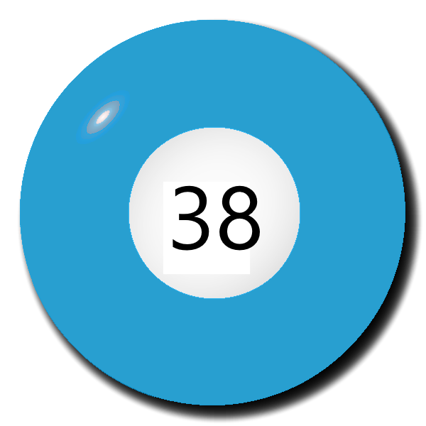
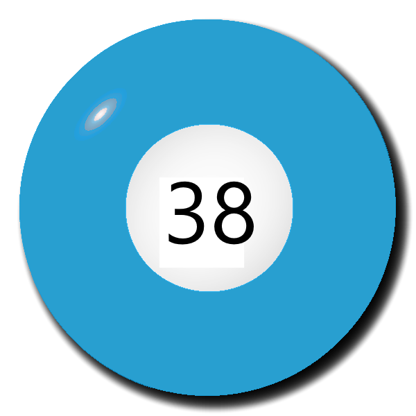

Korábbi sorsolások
Leggyakoribb számok
Leghasonlóbb számsorok
Leghosszabb sorozatok számsorokban
Legnagyobb összegű számsorok
Grafikonok
Érdekes történtek
Korábbi Sorsolások
Az előző heti nyerőszámok
 

A múlt heti nyerőszámok